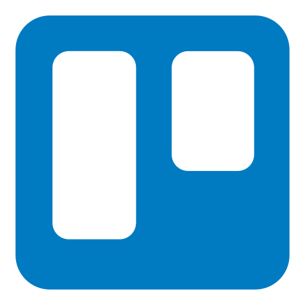
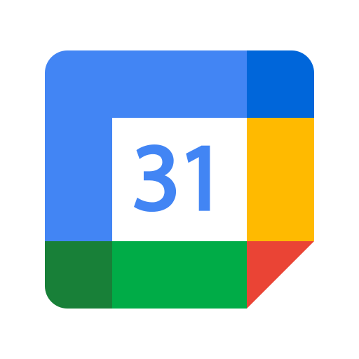
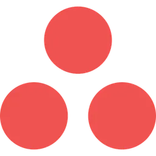

Ferramentas de Gestão de Projetos
 Trello
Funcionalidade: Gestão de tarefas e projetos.
Como ajuda na produtividade: O Trello permite criar quadros, listas e cartões para organizar tarefas de maneira visual e intuitiva. Pode ser usado para gerenciar projetos pessoais ou colaborativos, ajudando a acompanhar o progresso de forma clara e objetiva.
 Microsoft Teams
Microsoft Teams
Funcionalidade: Comunicação e colaboração em equipe.
Como ajuda na comunicação: O Teams permite chats, chamadas de voz e vídeo, além de integrar com o pacote Microsoft Office, facilitando a colaboração em documentos e apresentações em tempo real. E oferece calendários integrados, agendamento de reuniões e tarefas, além de permitir a criação de equipes e canais para organizar as conversas e projetos.
 Google Calendar
Funcionalidade: Planejamento de agenda e agendamento de eventos.
Como ajuda na gestão de tempo: O Google Calendar ajuda a organizar compromissos, reuniões e prazos de tarefas. Ele permite definir lembretes e eventos recorrentes, facilitando a gestão do tempo. Permite a integração com o Google Meet para realizar reuniões virtuais diretamente na plataforma, além de enviar notificações para lembrar os participantes sobre os eventos.
Notion
Funcionalidade: Organização de tarefas, notas e banco de dados.
Como ajuda na produtividade: O Notion é uma plataforma altamente personalizável que serve como um espaço centralizado para gerenciar tarefas, documentos e colaborar em tempo real. Ele combina anotações, listas de tarefas e calendários, o que ajuda a manter tudo em um único lugar. Possui templates para planejamento de projetos e metas, além de ferramentas de organização que facilitam o gerenciamento do tempo.
 Asana
Funcionalidade: Gestão de projetos e tarefas.
Como ajuda na produtividade: O Asana é uma ferramenta robusta para planejamento e acompanhamento de tarefas e projetos em equipe. Ela ajuda a definir metas, responsabilidades e prazos, facilitando o fluxo de trabalho. A plataforma permite configurar prazos, acompanhar progresso em tempo real e visualizar a carga de trabalho de forma clara, melhorando a gestão do tempo.